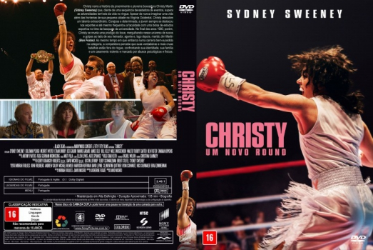

![link to Christy - Um Novo Round [Autorado] on Rotten Tomatoes](../img/tomatoes.png)
![link to Christy - Um Novo Round [Autorado] on TheMovieDb](../img/themoviedb.png)

Outro Título:Christy
País:United States, 135 minutos
Idiomas falados:Inglês, Português
Gênero(s):História, Drama
Diretor(s):David Michôd
Escritor(es):David Michôd, Mirrah Foulkes
Codec:MPEG-2 (DVD)
Número: 5908


Certificado:16
Sinopse:
Christy narra a história da proeminente e pioneira boxeadora Christy Martin (Sidney Sweeney) que, diante de uma sequência devastadora de eventos, supera as adversidades terríveis da vida no ringue. Apesar de nunca imaginar uma vida além das fronteiras de sua pequena cidade na Virgínia Ocidental, Christy descobre um talento extraordinário. Corajosa e determinada, a jovem sempre se destacou nos esportes e até mesmo frequentou a faculdade com uma bolsa de estudos esportiva no time de basquete da universidade. No final dos anos 1980, porém, Christy se revela uma prodígio do boxe, mergulhando nesse universo de socos e golpes ao lado de seu treinador, agente e, logo depois, marido Jim Martin (Ben Foster). Ao mesmo tempo em que embarca numa carreira bem-sucedida na categoria, a competidora percebe que suas verdadeiras e mais cruas batalhas estão fora do ringue, confrontando sua identidade, sua família e um casamento violento e marcado por abusos psicológicos e físicos.
Elenco:

Tipo de mídia: DVD5,
Legendas: Português, Sem Legendas
Alugado: Não
Tela: Anamorphic Widescreen